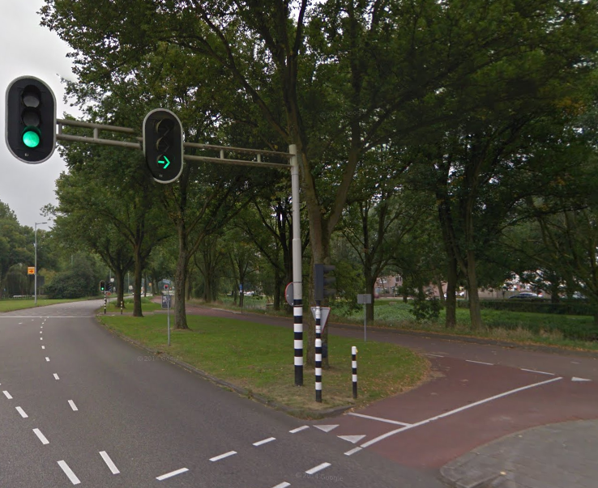
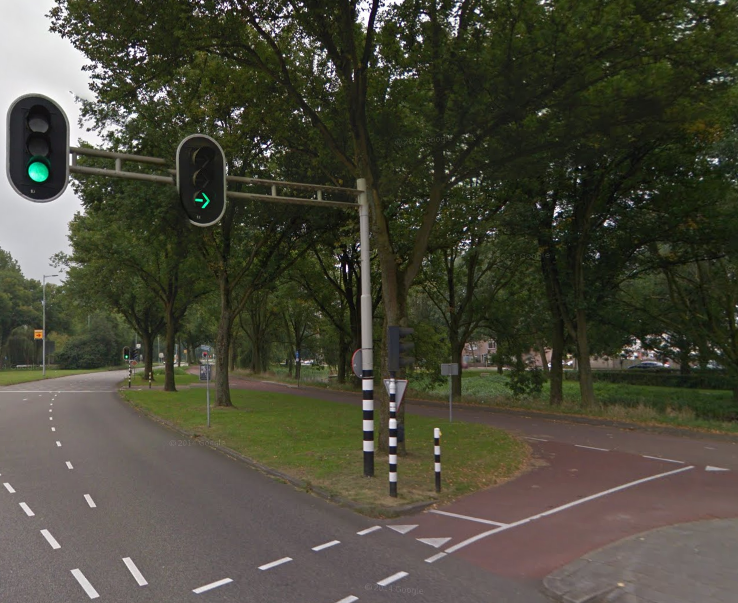

AI in het dagelijks leven
Artificiële intelligentie kom je overal tegen, soms ook zonder
het door te hebben. Algoritmes van sociale media is ook een AI,
die zorgt voor wat voor content jij te zien krijgt.
Er wordt nu ook een AI gemaakt voor onze stoplichten, hier, in Nederland
Deze AI zou dan dus de meest efficiënte manier creëeren om door de stad heen te rijden.
 
